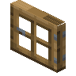

矮橡木门
Short Oak Door
英文名: Short Oak Door命名空间 ID:
dramaticdoors:short_oak_door类型: 方块所属模组: Dramatic Doors资料检索: 🔎 在 MC百科 搜索「矮橡木门」所属标签
合成获得 (2)

原始 JSON
{
"type": "minecraft:stonecutting",
"ingredient": {
"item": "minecraft:oak_door"
},
"result": {
"id": "dramaticdoors:short_oak_door",
"count": 2
},
"neoforge:conditions": [
{
"type": "neoforge:not",
"value": {
"type": "neoforge:mod_loaded",
"modid": "woodworks"
}
}
]
}woodworks:sawmillDramatic Doors
原始 JSON
{
"type": "woodworks:sawmill",
"ingredient": {
"item": "minecraft:oak_door"
},
"result": "dramaticdoors:short_oak_door",
"count": 2,
"neoforge:conditions": [
{
"type": "neoforge:mod_loaded",
"modid": "woodworks"
}
]
}